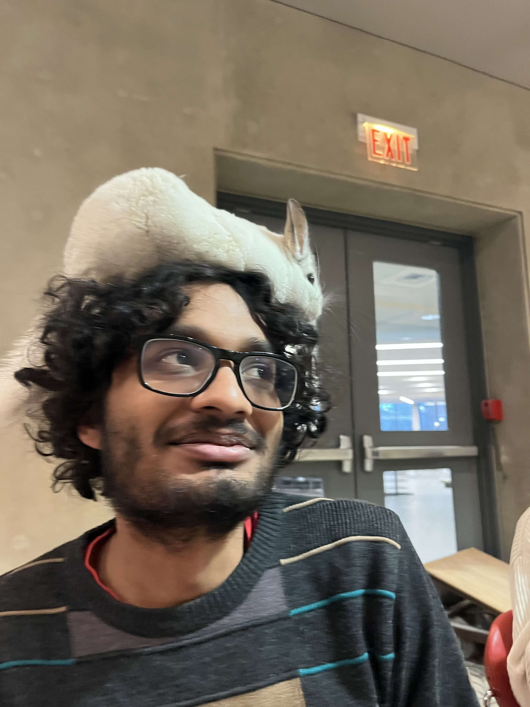

abhibhav dot garg at uwaterloo dot ca
I am a postdoc at the University of Waterloo, hosted by Éric Schost and Rafael Oliveira. From 2021 to 2025 I was a graduate student at the University of Waterloo, where I was advised by Rafael Oliveira. From 2015 to 2020 I was a student in the computer science department of IIT Kanpur where I got a dual B.Tech and M.Tech degree. My advisor was Nitin Saxena.
I am interested in complexity theory, in particular in algebraic complexity. I am also interested in computational algebra and number theory.
I used to help maintain the website of the Algorithms and Complexity group at Waterloo. The group organises a weekly seminar.
I used to co-organise the special interest group on theoretical aspects of computer science at IIT Kanpur. If you are interested in attending the talks, you can sign up to the mailing list and/or check the website. The latter includes links to the recordings of some of the talks.